01
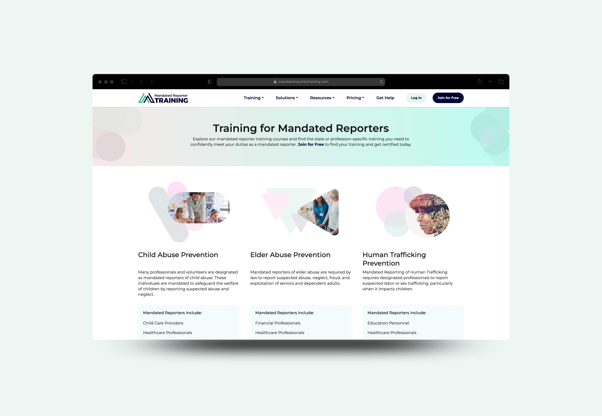
Designing role-based workflows and accessible courseware
Mandated Reporter Training
As a UX/UI Producer at GROW Design & Development, I helped clarify admin flows, learner access, compliance training, accessibility support, and developer handoff.
- Contribution
- UX/UI production, LMS mockups, courseware, accessibility testing
- Context
- Professional work at GROW Design & Development
The challenge
Mandated Reporter Training had to support learners, administrators, employers, developers, and compliance stakeholders. The design challenge was clarifying how the LMS should behave across roles, permissions, password recovery, certificates, training completion, and accessible courseware.
My role
As a UX/UI Producer at GROW Design & Development, I created LMS mockups, produced Storyline 360 courseware, authored and designed learning assets, and conducted accessibility testing and regulatory research.
- Created LMS mockups and user flows for administrative tasks.
- Documented role editing, password recovery, and super admin reset flows.
- Produced and modified courseware content in Articulate Storyline 360.
- Tested courseware and platform behavior to identify deployment issues.
- Authored a Voluntary Product Accessibility Template (VPAT) for the courseware Accessibility Conformance Report.
- Conducted Section 508 accessibility testing with JAWS across state-mandated training modules.
- Researched California, Nevada, and Pennsylvania legislation to inform clear instructional flows.
- Authored, copyedited, and visually designed courseware scripts and learning assets.
Development context · California’s training system
From fragmented courses to a connected service
CDSS and OCAP partnered with Simple Learning Systems to modernize training previously spread across websites, without learner accounts or accessible, mobile-friendly delivery. The 2023 cloud migration preserved learning histories. Simple reports halving runtime in most courseware.
These platform-level developments make continuity, efficient instruction, and dependable account states central design considerations.
Source: CDSS case study ↗
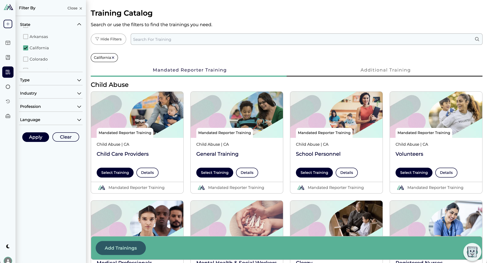
Learning journey / 01
Find the right learning path
The catalog makes a complex training offering navigable through state, profession, industry, type, and language filters. Visible selections help learners understand which requirements their course is intended to address before they begin.
Occupation-based personalization surfaces relevant courses while retaining access to the full catalog. The design consideration is to reduce search effort without hiding alternatives. CDSS case study ↗
Explore reporter protections
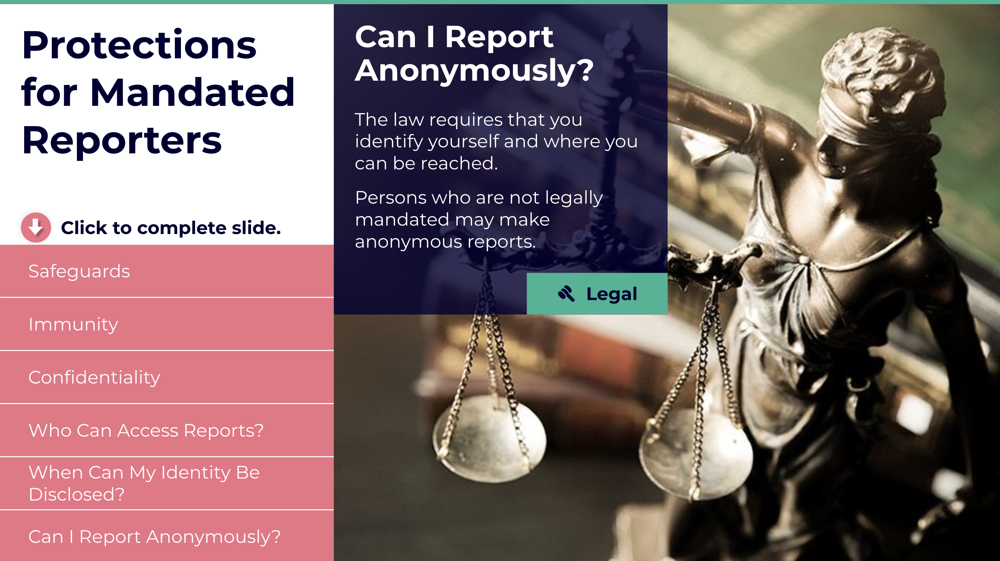
Learning journey / 02
Establish the responsibility
The legal requirements screen establishes why the learning matters before introducing abuse categories. A consistent resource label connects the lesson to supporting information. In this portfolio, these screens demonstrate course structure and content presentation; reporting requirements depend on jurisdiction and role.
Legal references moved into a web database available inside and outside the course, separating reference lookup from the learning sequence. CDSS case study ↗
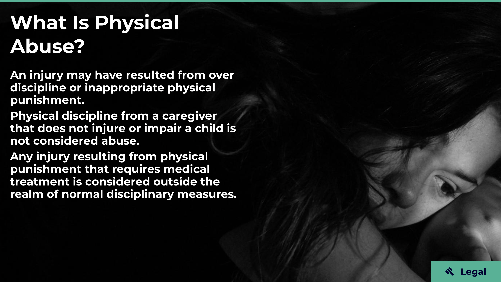
Explore the related definition screens
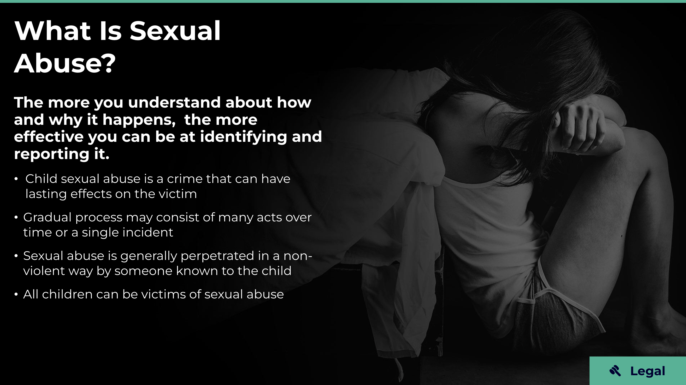
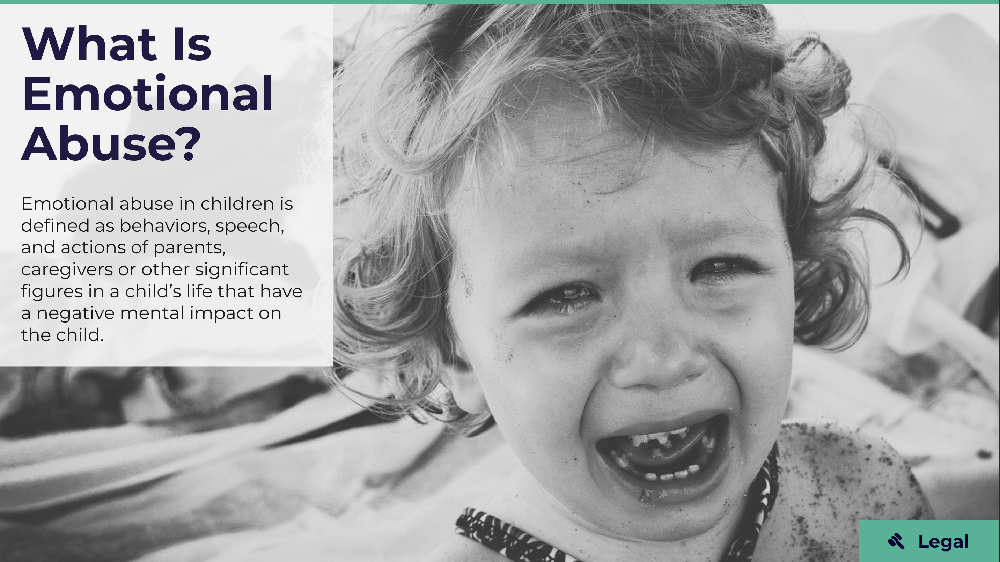
Learning journey / 03
Build a shared vocabulary
Definition screens introduce physical, sexual, and emotional abuse in a recognizable visual system. Clear headings, short explanatory blocks, and consistent resource placement help learners orient themselves as the subject changes. This foundational layer prepares them to interpret more nuanced situations.
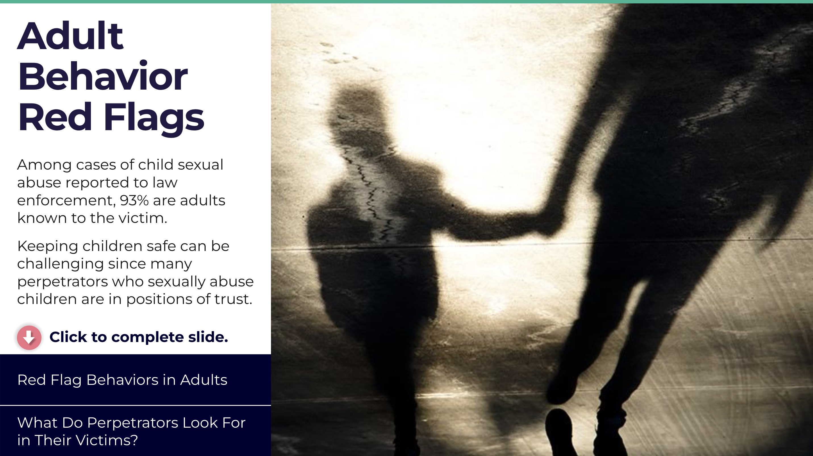
Explore context and recognition screens
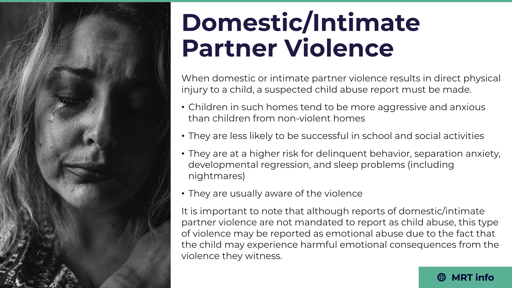
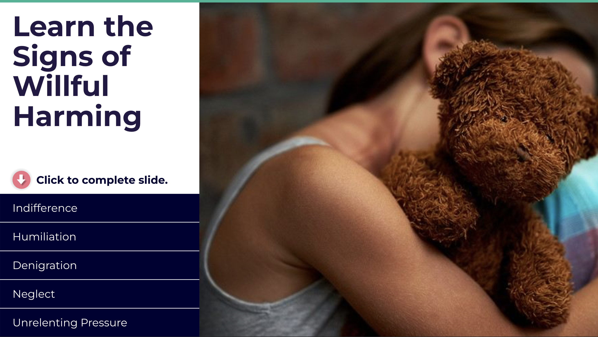
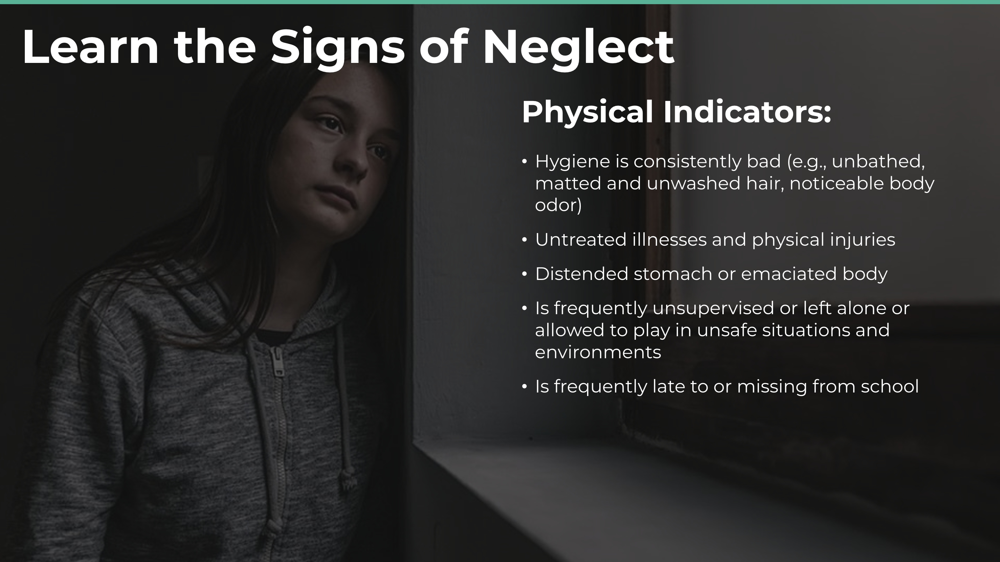
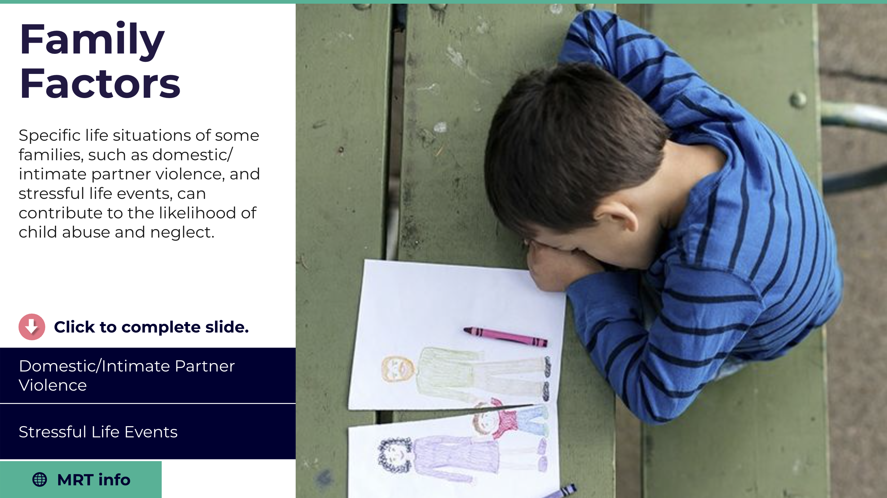
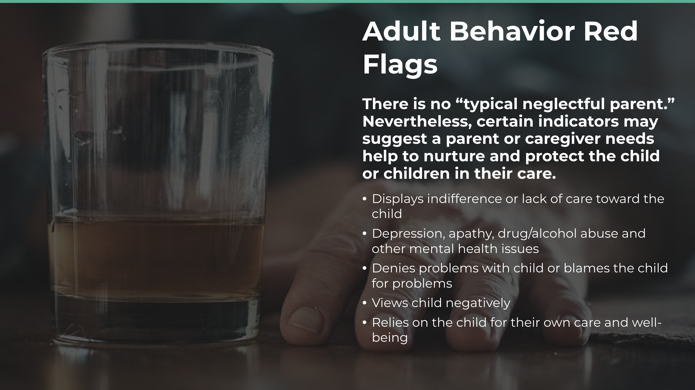
Learning journey / 04
Move from definitions to recognition
Expandable sections break longer lists of indicators into manageable pieces. Explicit completion prompts make the expected action visible. Related context screens then show how signs may appear within broader family circumstances. For interaction design, the key is connecting content, action, and progress without making the learner guess what to do next.
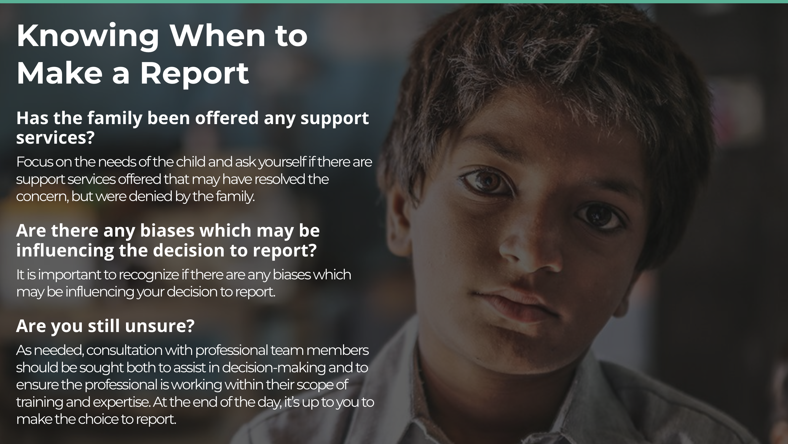
Learning journey / 05
Support a considered decision
The reporting-decision screen shifts from definitions to reflective prompts about support services, bias, and uncertainty. It illustrates the challenge of presenting sensitive information clearly while keeping the learner’s responsibility visible. My work on courseware production, accessibility support, and QA helped connect these learning screens to a dependable LMS experience.
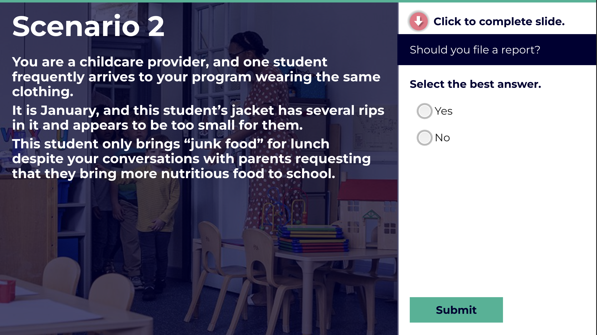
Learning journey / 06
Apply learning to a concrete scenario
This practice screen places a childcare scenario beside a clearly separated response panel. A single-choice answer and explicit Submit action give the interaction a predictable sequence: read, consider, select, and commit. Its place after the recognition and decision material shows how the course moves from explanation into application. The screenshot documents the question state, rather than an answer or feedback outcome.
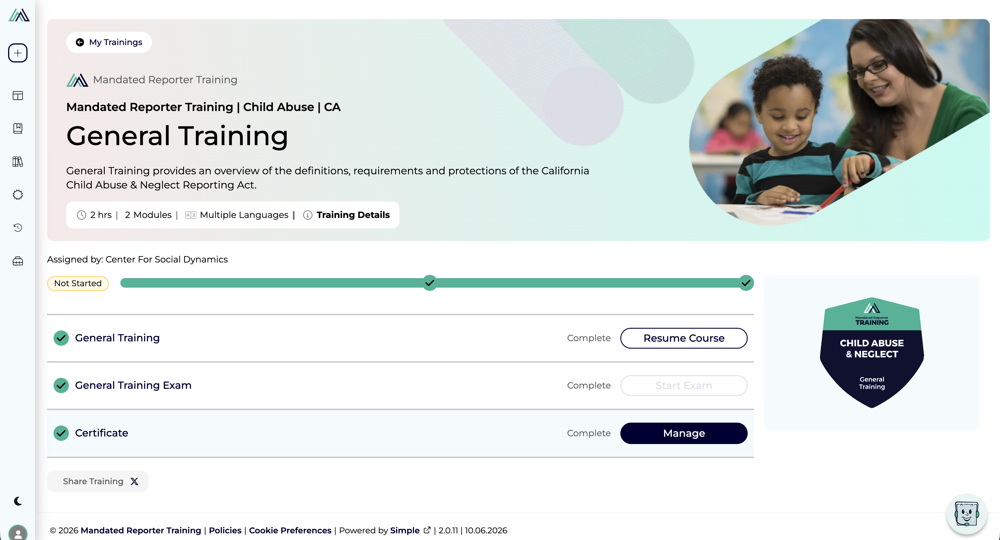
Learning journey / 07
Connect course activity to the learner’s next step
The training overview brings the course description, duration, module count, language availability, and assignment context into one place. Separate course, exam, and certificate rows pair status labels with actions such as Resume Course and Manage, so returning learners can identify where to continue. The captured page also shows a “Not Started” badge alongside completed rows, a useful example of the cross-screen state consistency that LMS QA needs to check.
From learning to documented completion
The platform supports compliance through state- and profession-specific courses, completion tracking, and downloadable, shareable certificates with QR verification. Its California training is developed with the California Department of Social Services, Office of Child Abuse Prevention. These features connect relevant instruction with evidence of completion; the appropriate course and requirements vary by role and location.
Training and compliance context: Mandated Reporter Training ↗
Process and reasoning
- Treated the project as a learning ecosystem rather than a single linear course.
- Mapped admin workflows into step-by-step screen states, modals, annotations, and directional flows.
- Separated administrator-triggered account actions from the learner follow-through experience.
- Made permissions, state changes, confirmations, and feedback visible for developers and collaborators.
Constraints
The work had to support compliance-sensitive content, accessibility needs, LMS and Storyline 360 platform limits, role and permission complexity, implementation clarity, and careful handling of serious mandated reporting subject matter.
The published accessibility approach includes captions, narration, enlarged text, keyboard navigation, and improved tab order. Design review therefore needs to check reading, listening, and keyboard journeys together. CDSS case study ↗
Design decisions
- Used confirmation modals for high-consequence account actions such as password reset.
- Treated user roles as account-management logic, not isolated labels.
- Documented both administrator and learner perspectives for multi-user flows.
- Designed the mockups as implementation support, not just presentation screens.
Focus areas
Testing, accessibility, and outcome
I tested Storyline courseware and LMS behavior to catch deployment issues, checked how templates and platform changes could affect learners, and conducted Section 508 accessibility testing with JAWS. I authored the VPAT for the courseware Accessibility Conformance Report, connecting accessibility documentation to review of the learning experience. Captions, keyboard navigation, clear instructional text, and predictable interaction patterns remained key considerations. The work created clearer developer documentation, mapped key account-management flows, supported role-based training access, and connected courseware production to CDSS/OCAP needs, CAPTA research, and state-level reporting requirements.
Key insight Interaction design often matters most in the invisible parts of a system: permissions, roles, recovery states, accessibility requirements, and administrative workflows.